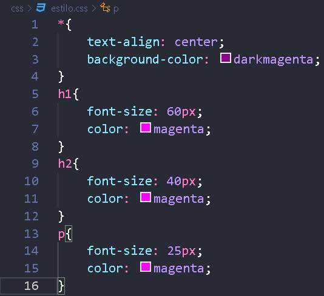

É uma forma de adicionar CSS em sua página, essa forma consiste em criar um arquivo.css externo que irá aplicar as propriedades CSS em uma ou mais páginas.
Exemplo:
IMAGEM 1: arquivo.css
IMAGEM 2: propriedades CSS contidas no arquivo.css

IMAGEM 3: tag HTML que aplica o arquivo.css na página
Como ja foi dito antes, você pode criar 1 arquivo.css que faz algumas alterações em tags, basta colocar a tag "link rel="stylesheet" href"local_arquivo.css" " nos sites que você quer fazer as mesmas alterações e assim você tem sites com as mesmas propriedades CSS.
Site ExemploO computador vai olhar essas prioridades, então por exemplo se você tiver um arquivo.css externo que altere um título para a cor verde, mas você tiver na tag desse título que a cor será azul, ele vai dar prioridade para a alteração que está direto na tag (CSS Inline) e mudar a cor para azul.

Criador do site: Deyvid Ribeiro de Paula
Data: 12/04/2024
Horário (aproximado): 18:42